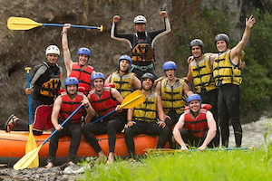

At Dry Oar, we believe every river adventure should become a lasting memory. As a family-owned rafting company, we are passionate about bringing people closer to nature through exciting white-water experiences. Our experienced guides are committed to making every trip enjoyable, memorable, and safe for adventurers of all experience levels.